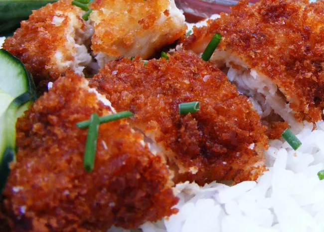

CHICKEN KATSU

DESCRIPTION
Chicken katsu is Japanese-style fried chicken. This is my family recipe and can also be used to make tonkatsu by using pork cutlets instead of chicken. Serve with white rice and tonkatsu sauce.
INGREDIENTS
- Chicken
- Seasonings
- Flour
- Egg
- Panko
- Oil
INSTRUCTIONS
- Season the chicken, then dredge in flour.
- Coat each breast in egg, then press into the Panko.
- Fry the chicken katsu until golden brown
- Serve with Kombu Seaweed Salad,Miso soup